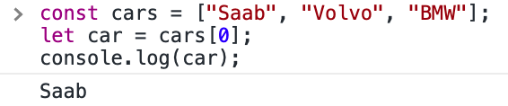
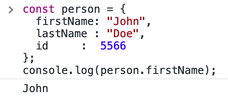
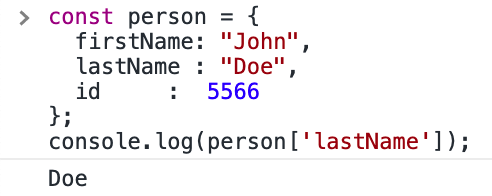

Javascript-DOM
1. An analogy to describe JavaScript and its relationship to HTML and CSS.
If you want to interact with someone, you need a language. Similarly, if you want to talk to the web page, you need a language that the web page understands. JavaScript is the language for the user to interact with web pages. HTML and CSS make static web pages, and JavaScript make web pages dynamic.
2. Explain control flow and loops using an example process from everyday life.
Control flow in JavaScript is how your computer runs code from top to bottom. It starts
from the first line and ends at the last line, unless it hits any statement that changes the control
flow of the program such as loops, conditionals, or functions.
The control flow is like a person's morning routine. The person first gets up, and brushes teeth, and
then eats breakfast, and then goes to work.
The person follows the routine step by step, unless somethig unusual happens.
Loops are iteration statements that will keep running until there is either nothing left to loop over, or if the condition becomes false. Let's take this life scenario as an example. Your friend came to your house and asked if she can borrow the book Harry Potter from you. You were not sure where it was, so you started looking for it from the top of the book shelf. You looked carefully at each book and see if it is Harry Potter. Finally, you found it at the bottom of the bookshelf and stopped looking the rest of the books. You were in a loop of looking for a book and the loop is over as soon as you found it.
3. Describe what the DOM is and an example of how you might interact with it.
DOM is the abbreviation for Document Object Model. When a web page is loaded, the browser creates a Document Object Model of the page. With the HTML DOM, JavaScript can access and change all the elements of an HTML document.
For example, I can use JavaScript to change the color of the h1 title in the page. Moreover, I can change the content of the p tag by clicking a button. Furthermore, I can add new HTML elements to the page when needed.
4. Explain the difference between accessing data from arrays and objects.
- Accessing array data: You access an array element by referring to the index number:
- Array indexes start with 0.
[0] is the first element. [1] is the second element. - 
- Accessing object data: You can access object properties in two ways:
- 1). objectName.propertyName
- 
- 2). objectName["propertyName"]
- 
5. Explain what functions are and why they are helpful.
A JavaScript function is a block of code designed to perform a particular task. It is executed when "something" invokes it (calls it).
Functions are helpful:
- 1). You can reuse code: Define the code once, and use it many times.
- 2). You can use the same code many times with different arguments, to produce different results.